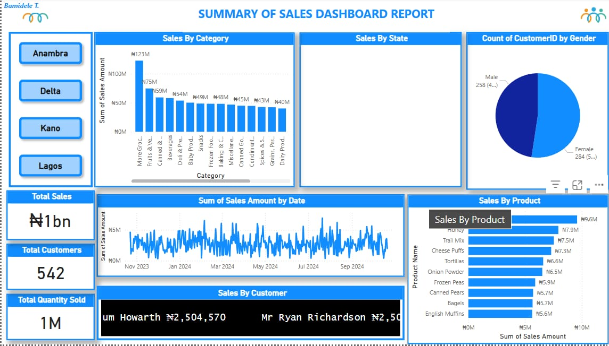

Web Development Projects
Here are some of the key web development projects showcasing innovative front-end and back-end solutions.
Chess Assignment
The Chess Assignment project is a web-based application designed to simulate a game of chess. It provides a user interface for two players to make moves according to standard chess rules, displays the current board state, and handles game logic such as piece movement validation, check, and checkmate conditions.
View ProjectLagos Connect
The Lagos Connect project is a proposed digital platform by the Lagos State Government. It leverages data science to enhance citizen engagement and streamline public services. By analyzing data on urban trends and needs, it aims to optimize resource allocation and facilitate more informed governmental decisions for a more efficient Lagos.
View ProjectAssessments WebAuthouring
This is an interactive assessment web application designed for participants of the Lagos State Specialized ICT Training Programme, powered by the Lagos State Ministry of Wealth Creation and Employment in collaboration with MacTay. It supports domain-based web authoring assessments across four categories, complete with time settings, instructions, and dynamic routing using Flask. This tool helps trainees assess their knowledge in HTML, CSS, and basic web development concepts using a structured, trackable, and hands-on interface..
View ProjectData Science Projects
Explore data analysis, machine learning, and visualization projects, often accompanied by videos and detailed explanations.
Adventure Works
This project involves analyzing business data for AdventureWorks, a global cycling equipment manufacturer, to track key performance indicators (KPIs) such as sales, revenue, profit, and returns. Using Power BI Desktop, raw CSV files gotten from Github containing transactional, customer, and product data will be transformed, modeled, and visualized into an interactive dashboard. The goal is to enable management to compare regional performance, identify trends, and recognize high-value customers for data-driven decision-making. Tool used is Power BI. Source: GitHub
View Code/ReportSales Report
This project involves analysing sales performance for a retail company. The dataset was gotten from Kaggle.com used by Power BI desktop to track insights into sales trends, customer behaviour, and product performance. The goal is to enable management compare seasonal performance, profit generated, identify trends and recognise high-value customers for data-driven decisions making.
View Code/ReportThis Bike Shop
This bike shop dashboard provides a clear snapshot of business performance across three years of operations. The company
generated $8.6 million in total revenue, selling 7,000 bikes to 1,445 customers across three store locations.
The data reveals some interesting patterns: New York dominates with 71% of customers, while California and Texas account
for 20% and 10% respectively. Trek bikes are the clear winner, generating $5.1 million in revenue, with their Slash 8
model being the top performer at $616,000. Mountain bikes lead category sales at $3.0 million, followed by road bikes at
$1.9 million.
However, there are concerns - the dashboard shows a 35% month-over-month decline in recent performance. The New York
region consistently outperforms others, suggesting successful strategies there that could be replicated in California
and Texas to boost overall company growth.
Tools used
1. Microsoft Excel for ETL [Extract-Transform-load]
2. Microsoft powerBI for data cleaning and visualization.
Cookies Sales Analysis
This Power BI dashboard presents a clean and comprehensive overview of cookie sales created using data sourced from a
YouTube channel. It's designed to be user-friendly, while still delivering deep insights through well-organized visuals
and metrics. The dataset was first transformed using Power Query, and advanced metrics were derived using DAX formulas
to enhance the depth of the analysis. The visualization offers a comprehensive snapshot of performance across various
cookie products, customers, and sales metrics.
At a glance, the company achieved an impressive $1.13 million in total unit sales from 700 orders, distributed across
five unique customers. These sales were recorded from a single country, showcasing the concentrated but high-value
nature of the business. The total profit generated amounted to a notable $2.72 million, reflecting strong profitability
margins.
Overall, this dashboard offers a clear, data-driven narrative of cookie sales dynamics, which could help stakeholders
make informed decisions on product focus, customer relations, and strategic growth.
Tool & Methodology
- Data Transformation: Power Query
- Visualization Tool: Microsoft Power BI
- Calculations: DAX (Data Analysis Expressions) formulas
Sales Report 2020
Dashboard Description:
The Excel dashboard provides a comprehensive overview of sales performance for the years 2019–2020. It includes key
metrics such as Gross Sales, Profit, Net Sales, Discounts, and Costs, broken down by month. The dashboard also features
calculated fields like %Profit and %Discount, derived from the underlying data. Additionally, it displays team-specific
Net Sales and monthly Gross Sales contributions. The data is presented in a structured format with clear visualizations
(implied by the PivotTable functions) for easy analysis of trends and performance.
Data Source:
The data can be sourced from public datasets on platforms like *Kaggle* (e.g., "Retail Sales Analytics" or "Global
Superstore Dataset"), which often include transactional sales data with similar fields (Gross Sales, Profit, Discounts,
etc.).
Tools Used:
- Microsoft Excel: For data organization, calculations (e.g., PivotTables, GETPIVOTDATA), and dashboard creation.
- Formulas and Calculated Fields: To derive metrics like %Profit and %Discount.
- PivotTables: For summarizing and analyzing the sales data dynamically.
Coding Quiz and Materials
Test your knowledge with our coding quizzes and access various educational resources to enhance your skills.
Dreamweaver
Explore tutorials and guides on Adobe Dreamweaver to build and design responsive websites visually.
Start Quiz